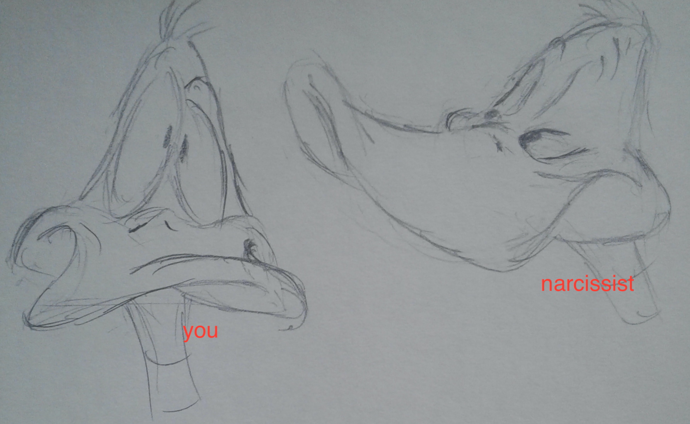
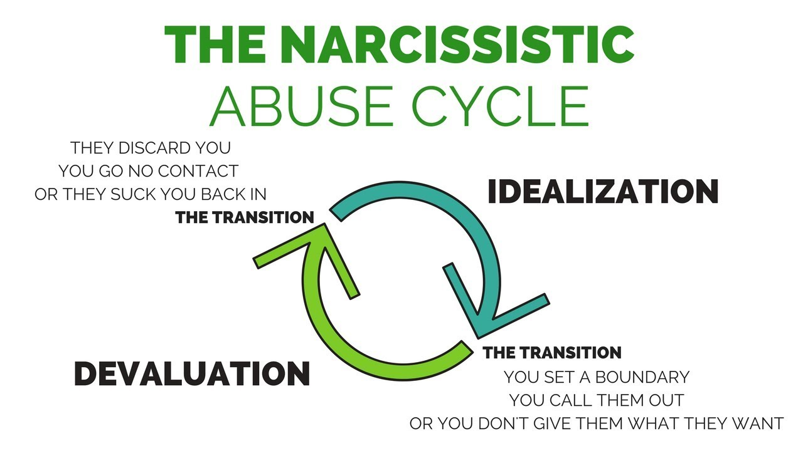

What is Narcissistic Abuse?

Narcissistic Abuse Pattern
Narcissists need NARCISSISTIC SUPPLY. Narcissistic supply is someone else’s LIFE FORCE: that part that shine’s in you, especially when you are happy. That essence that still shines in you, when you are distressed. That part that narcissists cannot find within themselves, which is vital to their own survival. Narcissistic abuse follows a PATTERN. This is an INTERMITTENT REINFORCEMENT PATTERN. Intermittent reinforcement patterns HOOK you into a CODEPENDENT relationship. A narcissist can be cruel, and then intermittently nice (eg. Stockholm syndrome); or can act nice, and then intermittently hurt you in the cruellest way imaginable. Either way, a victim of narcissistic abuse feels the need to constantly appease the narcissist, at expense self. If you call out a narcissist, or set boundaries, you get punished, with THREATS, GHOSTING, GASLIGHTING, SMEAR CAMPAIGNS, and many other OVERT and COVERT MANIPULATIONS and DECEPTIONS. A consistent character trait in a narcissist, is their exclusive FOCUS ON THEMSELVES. Every thought, and consequent words and actions, reflect back to themselves - “I this…I that…”. This results in a “I-You” dialogue. In other words, “I am right and you are wrong”. It is POWER CONTROL. Narcissists set desires with these psychological tricks. They CREATE CONFUSION, spinning the dialogue, and then assertively, ACTING as a compassionate person, setting their OWN AGENDA. To make the above even more effective, the narcissist creates an environment of ISOLATION and FEAR. Fear is our biggest motivator. In this state, we will not hesitate to do things out of our integrity. The narcissist explains isolation as a protection of all things to be feared, when in reality, isolation takes away our ability to understand all our options and our ability to receive helpful resources. Narcissists TARGET EMPATHS as their ideal source of narcissistic supply. This is because empaths have a lot of life force, and they are not narcissistically cruel in return. As a result, empaths are completely destroyed by narcissists. They do indeed lose their life force, which results in their bodies collapsing, and often leads to suicide. Most suicides are from empathic community, because it is inevitable that an empath will be targeted by narcissists, sometime during their lifetimes. No matter if the narcissist has targeted an empathic person or a fellow narcissist in a codependent relationship, the last step in the narcissistic abuse pattern is DISCARD. Once all the narcissistic supply is used up in the target, it is discarded. Yes, “it”. No matter how long the relationship, from a few days to decades, you are discarded. No matter how loyal a codependent narcissistic relationship had been - that each would “take a bullet” for the other - once the narcissistic supply is drained, you are discarded. A new person to be used as a narcissistic supply is being prepped, as it is needed for the narcissist's survival. 
The psychological trap is the INTERMITTENT REINFORCEMENT OF IDEALIZATION, and this reinforcement pattern is organic, changing all the time as needed by the narcissist. It starts as almost 100% IDEALIZATION, and then after a period of a few hours to a few years, the amount of idealization gradually decreases, and devaluation gradually increases to almost 100%. A flip of how the relationship started. You get sucked back in by intermittent acts of idealization.
|